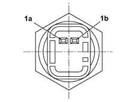
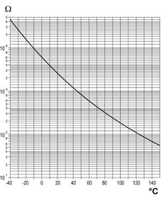

1056C Checking engine coolant temperature sensor operation
- Path
- Test > 10 ENGINE UNIT > 1056 PETROL INJECTION SYSTEM > 1056C Checking engine coolant temperature sensor operation
- Kind
- test / check procedure
- Applies to
- engines: 1.6 16v; all production periods
- Interactive page
- https://sloeber94.github.io/elrnDB-fMltpl/en/#/2892379
Applies to: engines: 1.6 16v; all production periods
Ensure that the ignition key is in OFF position, then disconnect the negative battery terminal.
Disconnect the electrical connection from the engine coolant temperature sensor.
 | Name | Connector |
|---|---|---|
- | Engine coolant temperature sensor |

-
